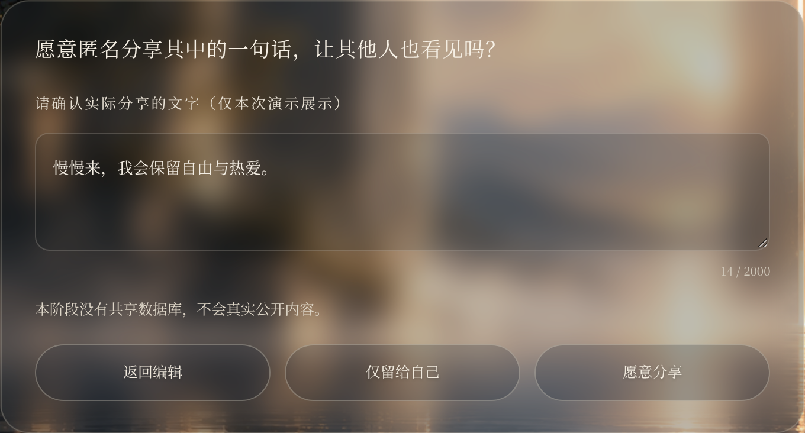
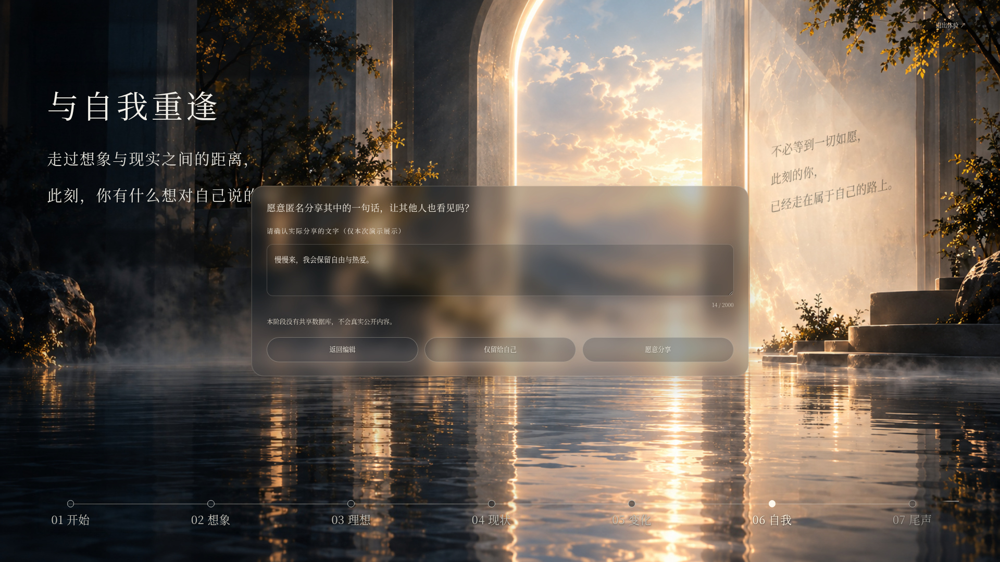
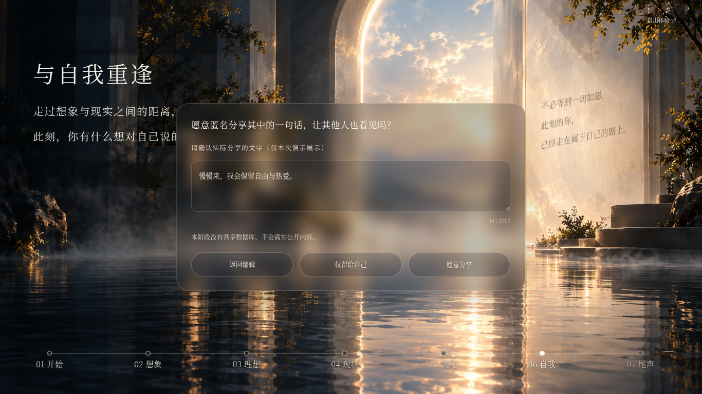
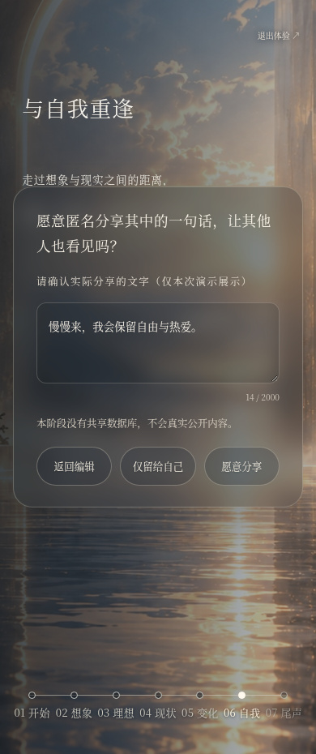
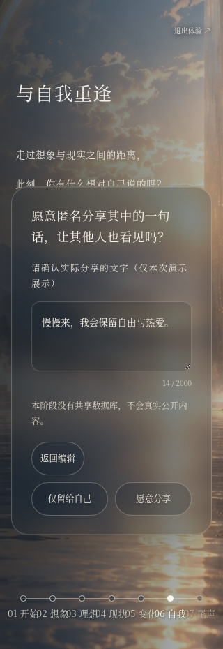

Page 06 · 词云分享意愿确认弹窗
仅修改第 06 页提交寄语后出现的确认框。保留原提问、字体、三个操作与所有分享状态逻辑，复用 02/04 的玻璃表面。桌面宽度 +27.5%，提问 +25%，辅助说明 +13%，按钮文字 +14%、高度 48px；上下留白 +18.2%。
真实操作步骤：完成前序流程 → 第 06 页输入寄语 → 点击输入框右侧箭头「收好此刻的心声」。本页所有截图来自实际触发后的生产构建，不是设计稿。
原确认框没有全屏遮罩。本轮以 0.28 透明背景、12px blur、细描边与轻阴影替换近乎不透明的深色面板，并检查父层和 z-index。背景保持可见。居中只使用平移，不使用整体缩放。
实际验证同意、拒绝、返回、空文本禁用同意、退出重置以及没有隐式同意，四种尺寸均通过。没有新增上传请求；既有会话内演示逻辑不变，没有接入真实上传服务。02/04 弹窗区域与第 06 页关闭状态的像素检查保持一致，词云、镜面、主标题、正文、流程轴没有改动。
| 视口 | 原尺寸 | 新尺寸 | 交互验收 |
|---|---|---|---|
| 1920×1080 | 748.80×337.36 | 954.72×365.67 | 通过 |
| 1366×768 | 532.73×337.36 | 679.23×365.67 | 通过 |
| 390×844 | 335.39×363.95 | 358.00×396.30 | 通过 |
| 320×667 | 275.19×384.84 | 288.00×499.05 | 通过 |
原 1920 弹窗已有约 749px 宽，因此按比例扩到约 955px，而非套用 720px 上限缩小。1366 笔记本约 679px；手机宽度限制为视口减去 32px，高度根据内容自适应，必要时内部滚动。
弹窗局部 · 浏览器 DPR=2 实际截图

实际触发后的桌面整页

1366×768 笔记本

实际触发后的手机整页
390×844

320×667

整页截图包含页面滚动范围；弹窗实际居中与边界已按可见视口坐标检查，四种尺寸都完整落在视口内。
修改前后 · 1366 笔记本
本轮只完成分享确认弹窗 UI 优化，没有开始新的开发阶段。